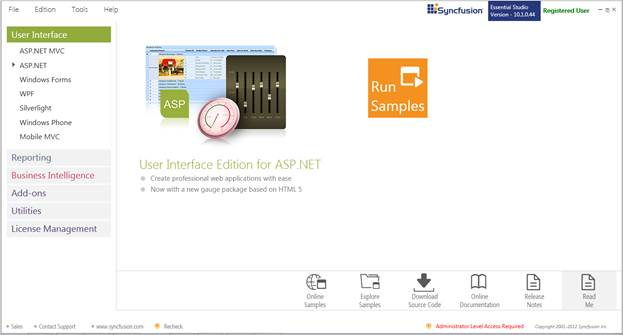
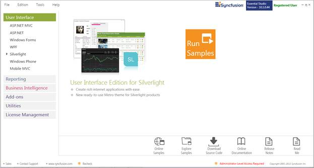
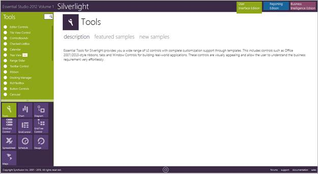

This section covers the location of the installed samples and describes the procedure to run the samples through the sample browser and online. It also lists the location of utilities, assemblies and source code.
Sample Installation Location
The Essential Tools Silverlight samples are installed under the following location, locally on the disk:
C:\Program Files (x86)\Syncfusion\Essential Studio\<Version Number>\Samples\Silverlight\
Viewing Samples
To view the samples, follow the steps below:
1. Click Start-->All Programs-->Syncfusion-->Essential Studio <v9.4.0.62> -->Dashboard.
Essential Studio Enterprise Edition window is displayed.

Figure 4: Syncfusion Essential Studio Dashboard
User Interface Edition panel is displayed by default.
Note: You can view the samples in any of the following three ways:
· Run Samples - Click to view the locally installed samples.
· Online Samples - Click to view online samples.
· Explore Samples - Explore Silverlight samples on disk.
2. Click Run Samples link. Essential Studio Silverlight Edition sample browser is displayed.

Figure 5: Silverlight Edition Sample Browser
3. Tools sample browser window is displayed.

Figure 6: Tools Samples
4. Select any sample from the samples provided and browse through the features.
Source Code Location
The default location of the Essential Tools Silverlight source code is:
[System Drive]:\Program Files\Syncfusion\Essential Studio\[Version Number]\Silverlight\Tools.Silverlight\Src